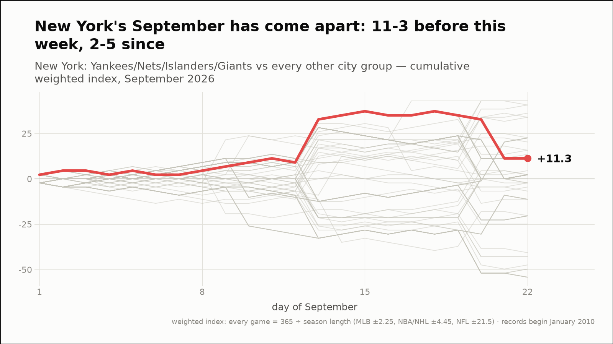
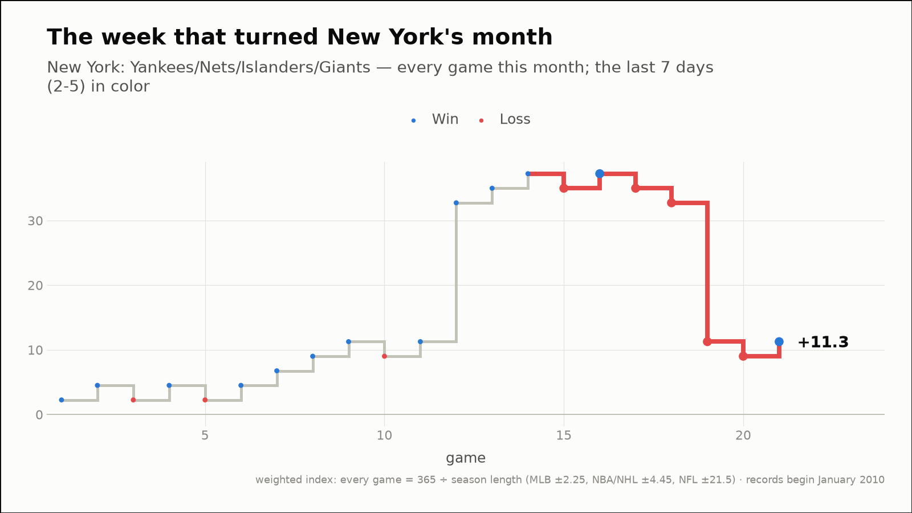
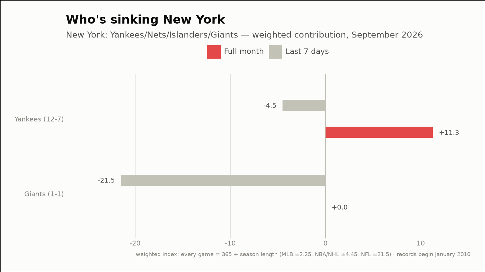
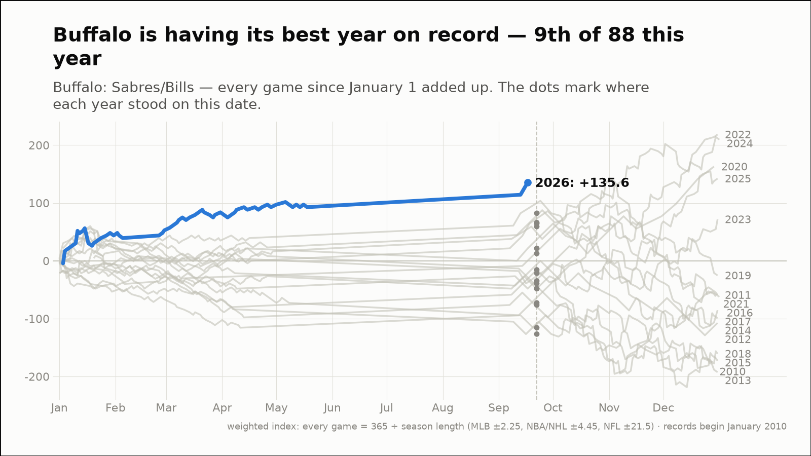
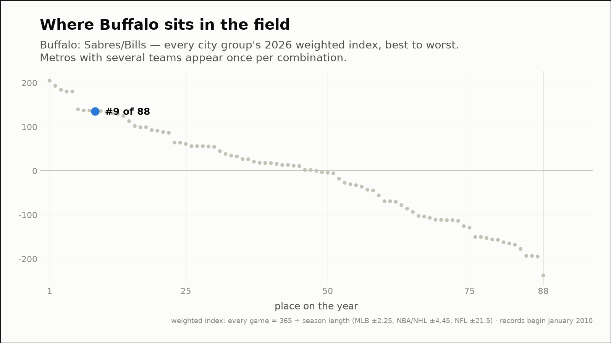
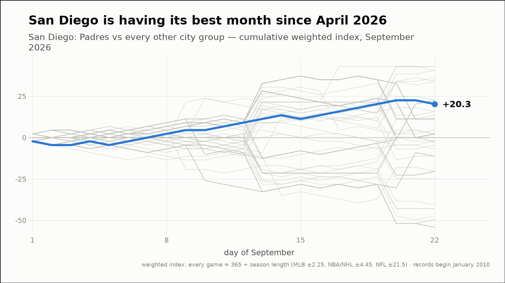
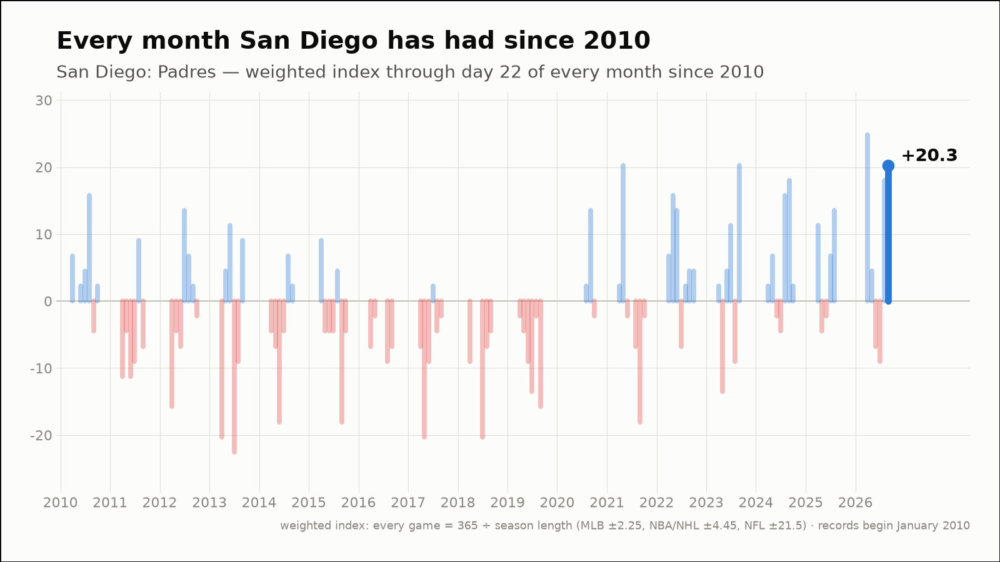
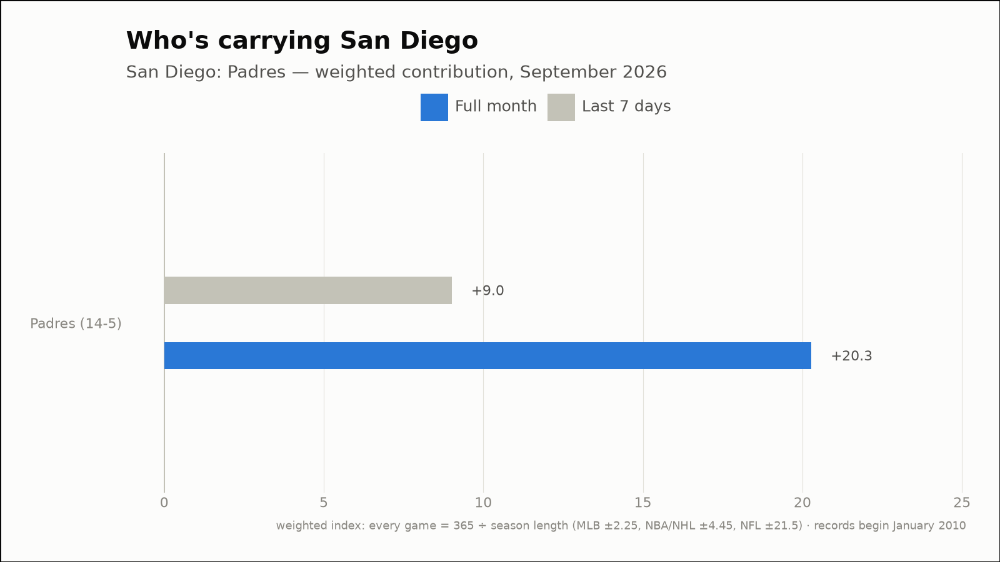

Out of the norm — three fandoms off their own script
The weekly hunt across all 88 city groups, through September 22, 2026
New York's September has come apart: 11-3 before this week, 2-5 since
New York: Yankees/Nets/Islanders/Giants
- Before this week
- 11-3, +37.2 weighted (+2.66 per game)
- Since
- 2-5, -26.0 weighted (-3.71 per game)
- This month (through September 22)
- 13-8, +11.3 weighted
- Last 7 days
- 2-5, -26.0 weighted
- Driving it this week
- Giants (0-1, -21.5)



Buffalo is having its best year on record — 9th of 88 this year
Buffalo: Sabres/Bills
- 2026 so far (through September 22)
- 40-21, +135.6 weighted — the best of the 17 years on record, at the same point
- Against the field
- 9th of 88 city groups on the year (91st percentile)
- This month (through September 22)
- 2-0, +42.9 weighted
- Last 7 days
- 1-0, +21.5 weighted
- Driving it this week
- Bills (1-0, +21.5)


San Diego is having its best month since April 2026
San Diego: Padres
- This month (through September 22)
- 14-5, +20.3 weighted — tied for the second-best of 105 months on record (98th percentile)
- vs past Septembers
- tied for the best September of the 17 on record
- Last 7 days
- 5-1, +9.0 weighted
- Driving it this week
- Padres (5-1, +9.0)


